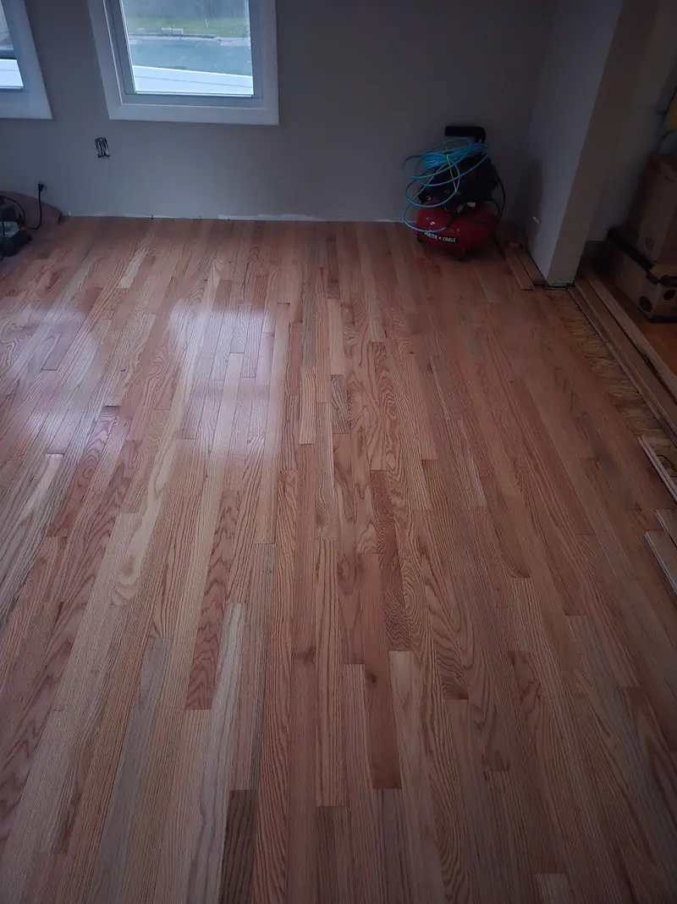
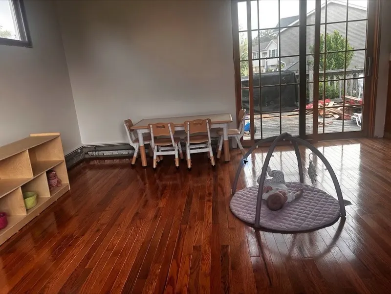

Natural or stained
A clear finish shows the wood's own color. Stain adds a step and makes color the main decision. Look at samples on your own floor once it is sanded, since the same stain looks different on each species and in each room's light.
Rhode Island-only floor refinishing
If the floor is solid, refinishing can save the wood you already have. We sand it flat, help pick the stain, and seal it for daily use.
Sanding and refinishing usually costs less than replacement and keeps real hardwood in the house. We will tell you if the floor has enough life left to refinish.
Planning a refinish
Two floors of the same size can be very different jobs. The wood species, the color you want, and the condition of the boards all shape the work.
| Wood | What to expect |
|---|---|
| Red oak | Sands and stains evenly. Its pink cast shows under natural, gray, and very light colors. |
| White oak | Sands and stains evenly. A good base for natural, light, and gray tones. |
| Maple and birch | Dense, tight-grained woods that can take stain unevenly. They are often kept natural, or need extra care with color. |
| Pine and fir | Softer woods found in some of the oldest houses. They mark more easily and can take stain unevenly, so test a color before committing. |
A clear finish shows the wood's own color. Stain adds a step and makes color the main decision. Look at samples on your own floor once it is sanded, since the same stain looks different on each species and in each room's light.
Oil-based polyurethane adds a warm amber tone that deepens over time. It dries slowly and has a stronger smell. Water-based finish stays clearer, dries faster, and has less odor. Ask which one your quote is based on and how many coats it includes.
Square footage is the starting point. Stairs, board repairs, a stain color, deep wear or pet stains, and carpet or adhesive that has to come up first all add to the scope. Sanding and refinishing usually costs less than replacing the floor.
Rooms need to be empty while the floor is sanded and finished. When you can walk on it, move furniture back, and lay rugs depends on the finish. Get those three times in writing for the product being used.
Real refinishing work
Refinishing removes a worn surface, evens the boards, and builds the color and protective finish back up when the existing floor is sound.



The first decision is whether the existing hardwood has enough sound material to save.
Often, yes. If the wood is structurally sound and has enough material left, sanding and refinishing can restore the existing floor without replacing it.
Individual damaged boards can often be repaired or replaced before sanding when the rest of the hardwood floor is worth saving.
The price depends on the square footage, the number of stairs, board repairs, whether you want a stain color, and the finish selected. Sanding and refinishing usually costs less than replacing the floor. We inspect the existing hardwood and give you a clear written quote before work starts.
Yes. Sanding takes the floor back to bare wood, so it can be finished natural or stained a new color. The species limits the result. Red oak carries a pink cast under light colors, and maple can take stain unevenly.
It depends on the finish, the number of coats, and the conditions in the house. Ask for the walk-on time, the furniture time, and the rug time for the specific product. Do not assume every floor can be walked on the same day.